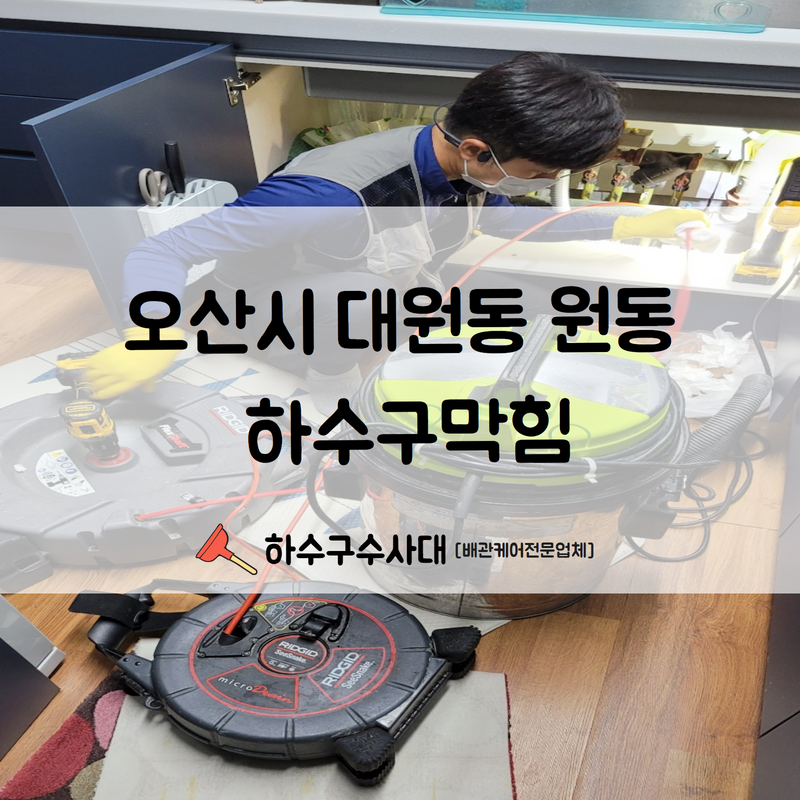
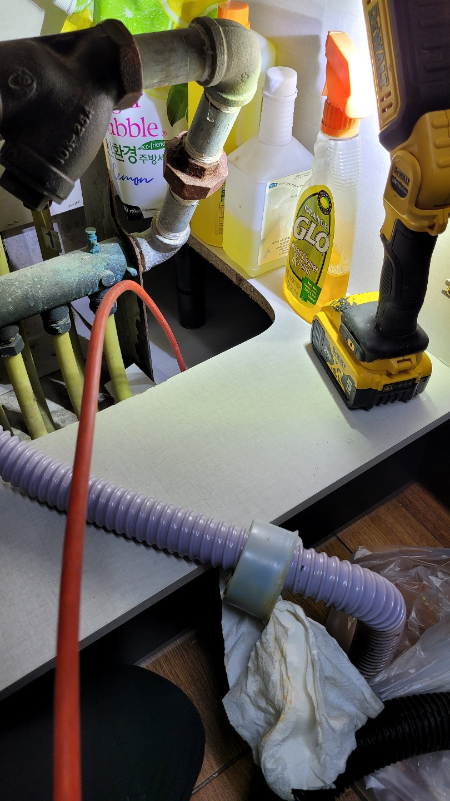
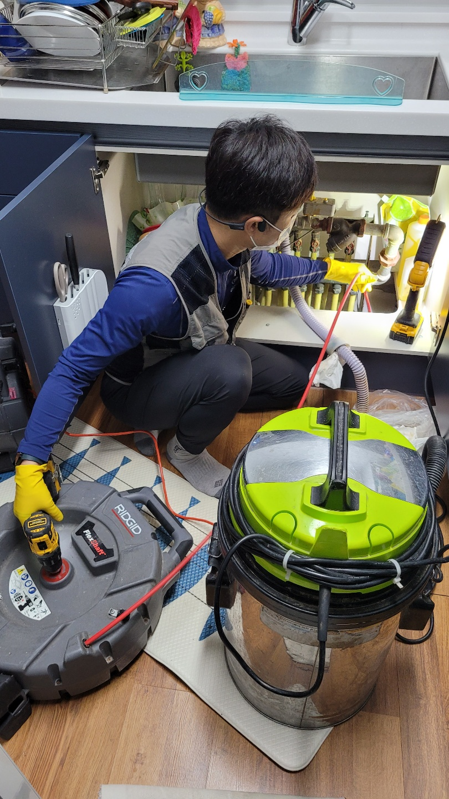
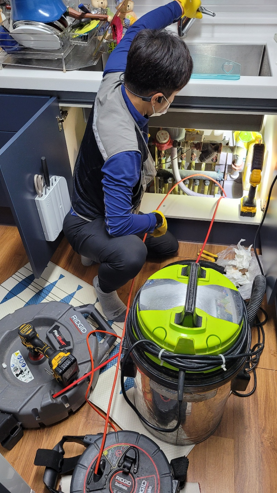
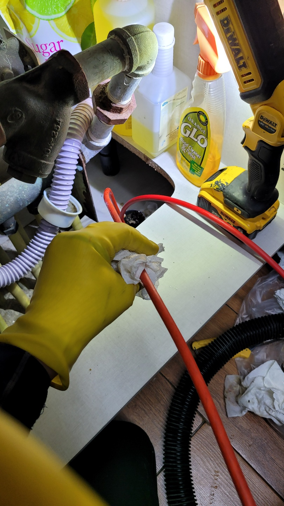
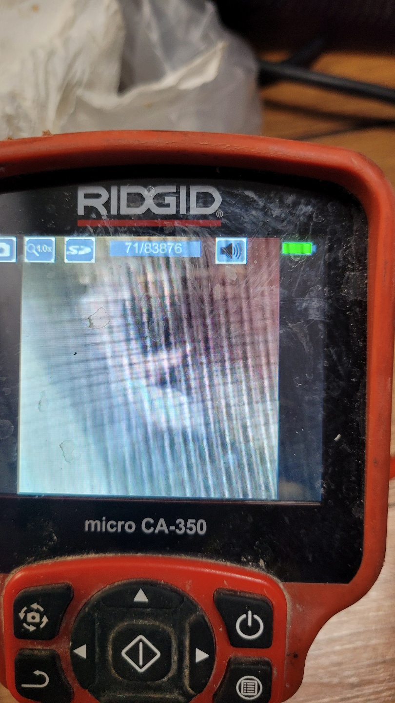
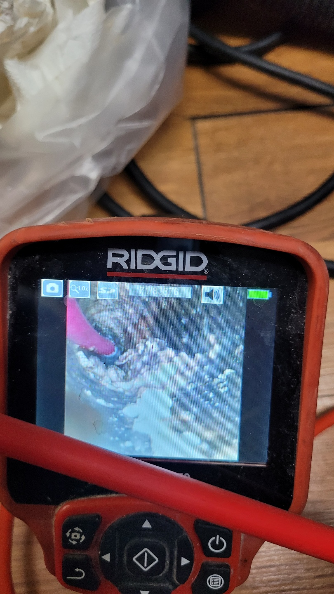

🏠 오산시 대원동 원동 하수구막힘 신속한 원익파악과 함께 깔끔한 시공해드렸습니다!
오산 원동 싱크대막힘 전문 시공 후기

📋 작업 개요
- 위치: 오산 원동, 원동, 오산
- 서비스 유형: 싱크대막힘, 하수구막힘, 배관막힘, 역류해결, 뚫는업체, 설비공사
- 작업 일시: 2022. 8. 19. 23:48
- 업체명: 하수구수사대 (010-5615-2118)
🔍 문제 상황
안녕하세요.하수구수사대 입니다.반갑습니다.
문제없이 잘 사용하던 하수구나 씽크대물이 역류하여 당황하신 적이 있으신가요? 원인은 모든 하수구 배관에는 통기관이라는 것이 있는데 오래된 건물 또는 설치가 되지 않은 주택의 경우에는 갑자기 싱크대에서 많은 양의 물을 버리게 될 경우 싱크대 역류가 일어날 수 있습니다.
오산시 대원동 원동 하수구막힘현장을 방문하였습니다.
사용하는 물이 하수관을 따라 내려가면서 공기의 압축이 생기는데 통기관이 막히거나 없으면 압축력에 의해서 문제없이 잘 내려가던 물이 다시 싱크대 바닥 배관 틈새로 압축공기가 빠지면서 물이 같이 역류할 수 있으며 빌라나 다세대 하수구 막힘 원인은 이물질이 들어가 쌓이면서 서서히 막히게 되는데요. 주로 머리카락과 기름이 대부분입니다.
또한 소량이라 '그냥 버려도 괜찮겠지? '라는 생각으로 무심코 버리는 이물질들이 서서히 하수구를 막히게 하는데 내 집에서 막히면 내가 해결하면 그만이지만 공동 배관이 막히게 되면 다른 사람들에게도 피해를 주게 되기에 최대한 이물질은 하수구에 버리지 않는 것이 좋습니다.

🔎 원인 분석
💡 전문가 진단: 오산시 대원동 원동 하수구막힘현장을 방문하였습니다.
하수구막힘 주원인은 이와 같은 ‘고체 상태의 기름입니다.
실제로 하림 배관은 현장에서 하수구 뚫는 업체들 하는 일으 해보니 기름으로 막힌 하수구를 뚫는 일이 많습니다. 그러나 하수구 막힘의 원인이 같다고 하지만 막힘의 상황은 다 같지 않습니다. 하수도 막힘의 상황이 다른 이유는 하수구 막힘이 어디서 부터 발생이 되었나에 따라서 집집마다 다릅니다.
그래서 기름으로 막혔어도 막힘이 생긴 지점과 막힌 정도를 확인하고 그에 따라서 적절한 하수구 장비를 사용합니다. 현재는 비용 때문에 불필요하다고 생각하실 수 있지만 쓸데없는데 돈 쓰는 일을 절대 아닙니다. 배관 안에 있던 기름 덩어리들이 꽉 차 있는 겁니다.
왜 잘 막히는지를 내시경으로 살펴보고 알려드렸습니다.
그리고 그 이후 공사를 시작하여 막힘 원인의 발단을 찾아서 제거하고 해결하였습니다. 소비자들께서는 안타깝게도 하수구가 막혔을 때 막혀있던 물이 어느 정도 빠져나가면 소비자들께서는 하수구가 뚫렸구나! 이렇게 생각들을 많이 하십니다. 하수구가 뚫렸다고 완전히 뚫리게 아닙니다.

🔧 작업 과정
전문적으로 하수구 뚫는 업체 분들도 모르시는 경우가 많습니다. 소비자께서는 같은 설비 업체라고 해서 다 같은 기술력을 가지고 있는 것 아닙니다, 하수구 막힘 원인은 기름성분입니다. 물이 역류하고 막힌 것 같다고 해서 모두가 막힘 양상까지 같지는 않습니다.
전문업체에서 맡기셔야 공사 후 하자 발생 시 as까지도 책임집니다.
하수구막힘 뚫다가 장비가 들어가지 않고 흙이 보인다면 하수구 배관이 무너졌을 확률이 높습니다.
하수구 배관 찾겠다고 여러 군데 땅을 파 해친다면 시간도 많이 들고 공사비도 많이 듭니다. 무너진 배관 찾는 관로 탑 지기를 보유하고 있으며 관로 탐지기는 땅속에서 발신되는 전파를 수신하여 정확한 위치는 알아냅니다. 그리고 그 지점을 푸레카로 파서 배관이 보이면 하수구 공사 진행합니다.
처음부터 비용이 많이 드는 땅을 파는 하수구 공사를 하지 않습니다.
풍부한 경험과 기술력으로 작업해 드리며 착한 가격으로 보답합니다. 그래서 정확히 점검하고 확실하게 작업하며 사후에 AS까지 책임지는 업체를 선택하시길 바랍니다. 배관의 구조와 정확한 진단, 현장 상황을 이해할 수 있어야 원인을 제거할 수 있습니다.
하수구 뚫는 업체 찾으신다면 정직하고 저렴한 견적의 업체를 이용하셔야 할 텐데요. 믿을 수 있는 하수구 뚫는 업체, 수도 관련 설비 업체를 찾으신다면 많은 후기가 입증된 저렴한 견적의 하수구수사대를 기억해 주시기 바랍니다.
지금까지 오산시 대원동 원동 하수구막힘


✅ 작업 완료
수리 현장을 함께 확인해 보았습니다.
경기도 오산시 오산로160번길 15 201-L16호




⚠️ 주방 싱크대 배관 막힘 예방 수칙
- ✅ 기름기가 묻은 식기나 프라이팬은 설거지 전 키친타올로 반드시 기름때를 닦아내세요.
- ✅ 주기적으로 싱크대 개수대에 뜨거운 물을 가득 받아 한 번에 내려 배관 내부 기름을 씻어내세요.
- ✅ 배수구 거름망을 미세한 필터로 사용하시고 음식물 찌꺼기가 틈으로 새어 들지 않게 관리하세요.
- ✅ 베이킹소다와 식초를 뜨거운 물과 함께 일주일에 한 번씩 부어주면 배관 살균과 막힘 예방에 좋습니다.
💡 핵심 정리
- 확실한 장비 작업(내시경 점검 및 샤프트 스케일링)으로 원인을 뿌리 뽑습니다.
- 작업 후 1년 이내에 동일한 부위 재발 시 100% 무상 A/S 서비스를 보장합니다.
- 서울 · 경기 · 인천 전 지역에 24시간 언제든 긴급 출동할 수 있도록 항시 대기 중입니다.
❓ 자주 묻는 질문 (FAQ)
🚨 오산 원동 싱크대막힘 문제로 고민이신가요?
정확한 원인 진단과 확실한 시공으로 재발 없는 해결을 약속드립니다.
24시간 긴급 출동 | 서울 · 경기 · 인천 전지역 | 1년 내 재발 시 무상 A/S